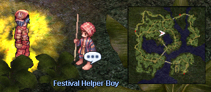
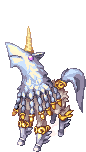
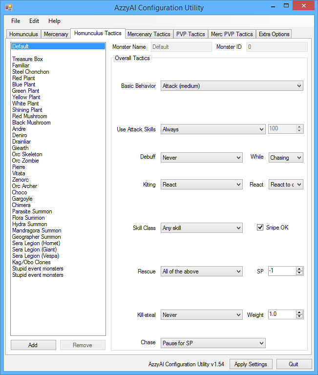
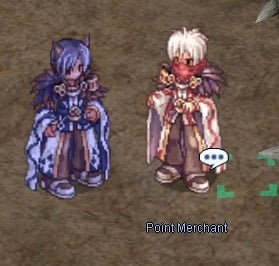
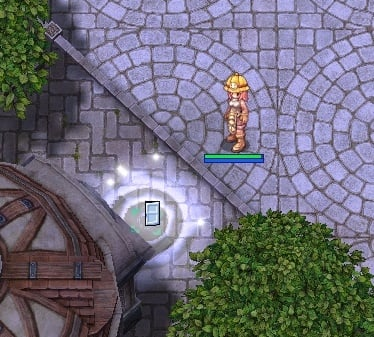

File list
This special page shows all uploaded files.
{kind=link}
| Date | Name | Thumbnail | Size | User | Description | Versions |
|---|---|---|---|---|---|---|
| 22:25, 13 July 2015 | TemporalBootsFlowchart.png (file) | 124 KB | Raikon | A flowchart to Temporal Boots creation and enchanting | 1 | |
| 08:12, 15 July 2015 | Pintadosnpc1.png (file) |  | 127 KB | Fyrus | 1 | |
| 08:37, 15 July 2015 | Pintadosnpc2.png (file) | 128 KB | Fyrus | 1 | ||
| 13:05, 3 September 2015 | IzludeNoviceQ01.jpg (file) | 47 KB | Renata | 1 | ||
| 13:06, 3 September 2015 | IzludeNoviceQ02.jpg (file) | 62 KB | Renata | 1 | ||
| 13:06, 3 September 2015 | IzludeNoviceQ04.jpg (file) | 78 KB | Renata | 1 | ||
| 15:12, 3 September 2015 | EdenGramps01.jpg (file) | 56 KB | Renata | 1 | ||
| 15:12, 3 September 2015 | EdenGramps02.jpg (file) | 60 KB | Renata | 1 | ||
| 15:55, 3 September 2015 | VanilEvoLv1.jpg (file) | 76 KB | Renata | 1 | ||
| 00:34, 4 September 2015 | NinjaSupplier.jpg (file) | 70 KB | Renata | 1 | ||
| 00:35, 4 September 2015 | RKMechGeneSupplier.jpg (file) | 123 KB | Renata | 1 | ||
| 00:38, 4 September 2015 | AlchemySupplier.jpg (file) | 45 KB | Renata | 1 | ||
| 00:40, 4 September 2015 | ArrowDealer.jpg (file) | 59 KB | Renata | 1 | ||
| 00:44, 4 September 2015 | PointMerchPront.jpg (file) | 60 KB | Renata | 1 | ||
| 00:45, 4 September 2015 | LeaWL.jpg (file) | 37 KB | Renata | 1 | ||
| 00:46, 4 September 2015 | GalfosWL.jpg (file) | 29 KB | Renata | 1 | ||
| 00:48, 4 September 2015 | TrapSpecialist.jpg (file) | 52 KB | Renata | 1 | ||
| 00:50, 4 September 2015 | GSRBLAmmo.jpg (file) | 159 KB | Renata | 1 | ||
| 00:51, 4 September 2015 | Harive.jpg (file) | 36 KB | Renata | 1 | ||
| 01:26, 4 September 2015 | OpenBuyingStoreExample.jpg (file) | 53 KB | Renata | 1 | ||
| 01:47, 4 September 2015 | EdenHQ1F.jpg (file) | 392 KB | Renata | 1 | ||
| 01:48, 4 September 2015 | EdenHQ2F.jpg (file) | 368 KB | Renata | 1 | ||
| 03:05, 4 September 2015 | Amistrs.png (file) |  |
5 KB | Renata | 1 | |
| 03:07, 4 September 2015 | Filirs.png (file) | 7 KB | Renata | 1 | ||
| 03:08, 4 September 2015 | Lifs.png (file) |  |
7 KB | Renata | 1 | |
| 03:09, 4 September 2015 | Vanils.png (file) |  |
6 KB | Renata | 1 | |
| 03:16, 4 September 2015 | Bayeri.png (file) |  | 9 KB | Renata | 1 | |
| 03:16, 4 September 2015 | Dieter.png (file) |  |
7 KB | Renata | 1 | |
| 03:17, 4 September 2015 | Eleanor.png (file) | 6 KB | Renata | 1 | ||
| 06:27, 4 September 2015 | AzzyAIHomunTab.png (file) |  |
34 KB | Renata | 1 | |
| 06:34, 4 September 2015 | AzzyAIHomunTab02.png (file) | 36 KB | Renata | 1 | ||
| 06:35, 4 September 2015 | AzzyAIHomunTab03.png (file) | 34 KB | Renata | 1 | ||
| 06:35, 4 September 2015 | AzzyAIHomunTab04.png (file) |  | 30 KB | Renata | 1 | |
| 08:17, 4 September 2015 | JobProgression.png (file) | 25 KB | Renata | Reverted to version as of 08:16, 4 September 2015 | 5 | |
| 08:33, 4 September 2015 | JobProgressNonTrans.png (file) | 25 KB | Renata | 4 | ||
| 08:54, 4 September 2015 | WShopCatalog.jpg (file) | 121 KB | Renata | 1 | ||
| 11:31, 4 September 2015 | EinbrochGSGuild133-199.jpg (file) | 12 KB | Renata | Location of Gunslinger Guild in Einbroch. | 1 | |
| 11:32, 4 September 2015 | EinbrochGSGuildArms.jpg (file) | 339 KB | Renata | The Gunslinger Weapon Shop inside Einbroch Gunslinger Guild | 1 | |
| 11:39, 4 September 2015 | RippedCabus.jpg (file) | 17 KB | Renata | 1 | ||
| 11:40, 4 September 2015 | Suhnbi.jpg (file) | 15 KB | Renata | 1 | ||
| 11:45, 4 September 2015 | PointMerchMidgard.jpg (file) |  | 34 KB | Renata | 1 | |
| 11:49, 4 September 2015 | NinjaHideoutAmatsu.jpg (file) | 12 KB | Renata | Location of Ninja Hideout in Amatsu | 1 | |
| 11:52, 4 September 2015 | NinjaGearCrafter.jpg (file) | 31 KB | Renata | 1 | ||
| 11:56, 4 September 2015 | NinjaSupplierAmatsu.jpg (file) | 165 KB | Renata | 1 | ||
| 12:06, 4 September 2015 | MainOfficeEntry.jpg (file) |  | 84 KB | Renata | 1 | |
| 12:53, 4 September 2015 | BGGearShop.jpg (file) |  |
30 KB | Renata | 1 | |
| 13:20, 4 September 2015 | CatInvestLocations.jpg (file) | 43 KB | Renata | 1 | ||
| 13:20, 4 September 2015 | CatMerchManager.jpg (file) | 58 KB | Renata | 1 | ||
| 13:23, 4 September 2015 | MLDInvest.jpg (file) | 8 KB | Renata | Location of Namis and Thanks Ticket Machine in Malangdo (Guild Dungeon Investment) | 1 | |
| 13:42, 4 September 2015 | NamisItemInvest.jpg (file) | 63 KB | Renata | 1 |
{kind=link}
{kind=link}
{kind=link}
{kind=link}
{kind=link}
{kind=link}
{kind=link}
{kind=link}
{kind=link}
{kind=link}
{kind=link}
{kind=link}
{kind=link}